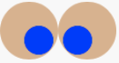

Textbook Extras: Expressions and Building Images
Copyright (c) 2017 Kathi Fisler
1 Practicing Image Composition
Here is a more complicated example of composing images. It may be useful as you look at the flags assignment. We’ll go over this in more detail on Monday, but I’m giving you the code now as an example to look at.
Let’s create an image of a pair of crossed eyes. We’re aiming for an image like the following:

The code file posted alongside these notes shows how to do this.